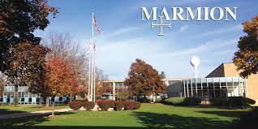

Eduardo Barraza's Page
About Me
I was born in Aurora, Illinois. I grew up on the east side of Aurora, by Farnsworth Ave. I attended public school up until high
school, when I attended Marmion Academy. Upon graduating, I decided to focus my career on Computer Science, with the goal of becoming a
Software Engineer. The university I would end up studying at was Aurora University, and after my first two semesters, my
interest in Computer Science has only grown greater and deeper.

Three Things I did This Summer
- I visited my Grandmother in Mexico in June
- I got a job at the Outlet Mall
- I got a First Division score at a music festival in early June
This page is published at https://45.55.136.114/~ebarraza01/aboutme